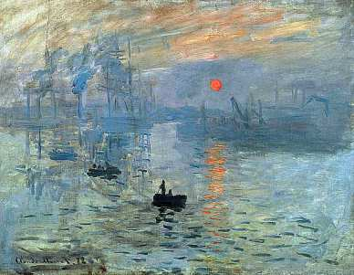

  <div class="container">
    <mat-card class="example-card">
      <mat-card-title>Враження. Схід сонця</mat-card-title>
      
      <mat-card-content>
          <p>Створена у: 1872 році</p>
          <p>Розміри:	48×63 см</p>
          <p>Місцезнаходження:	Музей Мармоттан-Моне (Париж,Франція)</p>
        </mat-card-content>
        <mat-card-actions>
          <button mat-raised-button color="primary">Детальніше</button>
        </mat-card-actions>
      </mat-card>
  </div>

  